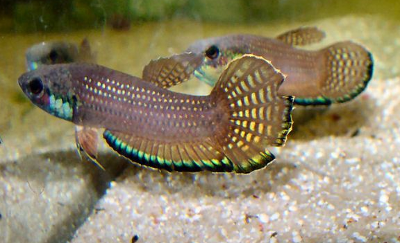
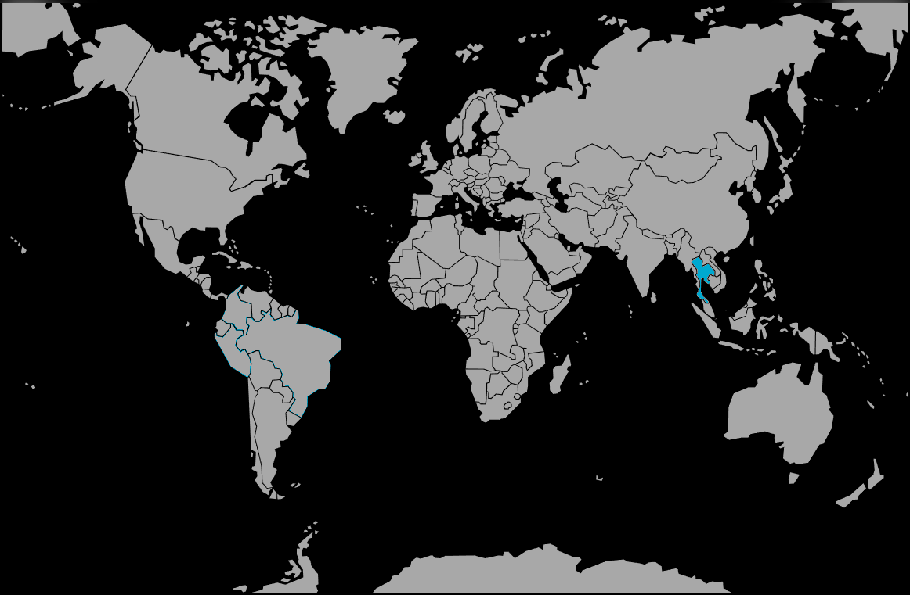

Systématique
- Ordre : Anabantiformes
- Famille : Osphronemidae
- Genre : Betta
- Espèce : B. simplex
- Auteur : Kottelat, 1994

Betta simplex, le betta de Krabi ou betta à incubation buccale de Krabi, est une petite espèce labyrinthidé endémique de Thaïlande du sud, extrêmement rare et précieuse en aquariophilie, appartenant au groupe Picta au mode reproducteur primitif.
Le mâle atteint 4 à 6 cm de longueur standard, tandis que la femelle mesure environ 4 à 5 cm. Le corps est petit, oblong et peu coloré comparé à Betta splendens. La coloration de base affiche un beige clair à brun-gris jaunâtre avec trois rayures longitudinales sombres discrètes ou parfois invisibles selon la population. Le mâle arbore une gorge et des opercules bleu-vert iridescents, les écailles corporelles restant crème ou rougeâtre clair sans iridescence significative. Les nageoires pelviennes sont marginées d'un liseré blanc. La nageoire anale et caudale présentent une double bande marginale : bande bleue claire externe, bande bleu-foncé interne. La tête du mâle est plus rougeâtre que le reste du corps. La femelle demeure généralement plus terne.
Cette espèce est unique par plusieurs populations géographiquement distinctes dans sa région d'origine : le groupe « type » provenant du secteur de Tham Sra Kaew et les « neuf ponds », et le groupe « type 2 » du secteur d'Ao Luek, présentant des différences morphologiques légères (tête plus aplatie, colorations variables).
Contrairement à Betta splendens, Betta simplex est une espèce très peu agressive et paisible. Les mâles tolèrent la présence les uns des autres, particulièrement en aquarium densément planté; les affrontements se limitent à des parades sans conséquence grave, quelques morceaux de nageoires arrachés au pire. Les mâles ne montrent pas de comportement suicidaire lors des combats contrairement à B. splendens. L'espèce peut aussi être maintenue en couple ou petit harem. Cependant, elle demeure timide et réservée, passant la majorité du temps cachée sous les roches et derrière la végétation, émergeant brièvement pour respirer à la surface.
L'espèce vit naturellement à mi-profondeur en zones de courant modéré, habitat fondamentalement différent du bassin d'eau stagnante typique des bettas. Elle est sensible aux paramètres de l'eau, aux changements brutaux chimiques et physiques. Elle ne tolère pas bien les eaux chaudes (au-delà de 28°C) et demande une eau fraîche et bien oxygénée. Elle possède un labyrinthe développé lui permettant de respirer l'air atmosphérique et de survivre temporairement en eaux désoxygénées. Elle peut sauter hors de l'eau et le bac doit être couvert. La teneur en nitrates doit rester inférieure à 25 mg/L pour optimiser la santé de l'espèce.
Mode : ovipare incubateur buccal paternel; reproduction très primitive, similaire à Betta picta et B. rubra.
La reproduction en captivité est considérée comme très difficile. Après un courtage protégé et soutenu, les deux parents se courtisent intensivement. L'accouplement débute lorsque la femelle affiche des barres verticales ou des bandes sombres transversales, signaux de réceptivité. Le mâle s'enroule progressivement autour du corps de la femelle, les deux corps vibrant en synchrone. Les œufs sont émis lentement; le mâle les recueille sur sa nageoire anale puis en bouche. Ce processus peut durer plusieurs heures, les enlacements se succédant.
Une fois tous les œufs collectés, débute l'incubation buccale paternelle où le mâle retient les œufs en permanence dans sa bouche. Après 36 à 48 heures, les œufs éclosent. Les alevins demeurent aussi en bouche du père durant 14 à 21 jours, le mâle jeûnant presque totalement et ses nageoires dépérissant visiblement. À libération, les alevins demeurent 3–5 jours en développement libre. Le mâle couvre généralement jusqu'à ce que les alevins atteignent la nage libre complète, sans prédation notable. Les couples peuvent se reproduire en succession rapide si maintenus ensemble.
Dimorphisme sexuel : peu marqué mais discernable. Le mâle est légèrement plus coloré que la femelle, arborant la gorge et opercules bleu-vert iridescents plus prononcées. La femelle demeure terne. À maturité, la papille génitale blanche de la femelle devient visible. Lors de la parade, la femelle se pare de barres verticales transversales sombres ou d'une teinte plus foncée généralisée.
Espérance de vie : environ 4 à 6 ans en captivité en conditions optimales, bien que peu d'individus atteignent cet âge en pratique. L'espèce demeure peu documentée sur la longévité réelle.
Betta simplex fréquente les sources calcaires de bassins karstiques, petits lacs, fossés d'écoulement et cours d'eau lents du nord-ouest de la province de Krabi, Thaïlande méridionale. L'habitat affiche une eau exceptionnellement claire, neutre à légèrement alcaline (pH 7,0–7,4), enrichie en carbonates de calcium créant une teinte bleu-vert distinctive. L'eau est bien oxygénée et le courant est modéré à lent, contrastant radicalement avec l'habitat stagnant d'autres bettas. Le substrat est composé de roches calcaires, graviers et sable.
La végétation est dense et très importante : des lits importants de Cryptocoryne cordata dans les pools, dense végétation marginale le long des berges (surplomb dense). L'espèce occupe surtout les petits fossés drainant les pools, zones souvent soumises à des périodes de sécheresse marquée où l'eau se retire à quelques centimètres. La densité de population est très faible, l'espèce occupant territorialité restreinte. La température naturelle avoisine 22–25°C. Les espèces sympatriques incluent Barbodes lateristriga, Trigonostigma espei (type locality), Channa lucius, Danio sp. (population Ao Luek).
Répartition

Origine naturelle :
- Thaïlande : province de Krabi, Thaïlande méridionale (péninsule).
- Localité type : sources calcaires (petit lac) de Tham Sra Kaew et Nine Ponds, fossé arrière du village Ban Nai Sra, 2,2 km de la route nationale 4034, 1 800 m derrière le Centre de Santé publique, nord-ouest de Krabi, Krabi Province.
- Plusieurs populations distinctes : groupe « type » (Tham Sra Kaew / Nine Ponds) et groupe « type 2 » (Ao Luek), présentant variations morphologiques mineures.
- Surface totale d'occupation inférieure à 10 km².
Espèce critiquement menacée (EN - « Critically Endangered ») par la dégradation des habitats par pollution et développement agricole. Importée en captivité depuis les années 1990 mais demeurant extrêmement rare. Aucune introduction signalée en dehors de l'aire d'origine.
Paramètres de maintenance
Température : 22 à 25 °C, idéalement 22–24 °C; l'espèce dépérit au-delà de 28°C sur de longues périodes.
pH : 4,0 à 6,0 selon Fishipedia (eau acide); alternativement, 7,0–7,4 selon habitat naturel karstique alcalin; pH 5,8–6,5 est un compromis stable.
GH : 10 à 11 °dGH selon habitat naturel (eau minéralisée); ou 3–12 °dGH pour adaptation à l'acide.
Courant : modéré à lent; bonne oxygénation et filtration douce obligatoires.
Volume conseillé : minimum 60 L pour un couple ou petit groupe en bac spécifique; 60 cm × 30 cm de base minimum. Très planté, lumière tamisée, nombreux refuges rocheux et végétaux, substrat stérile, changements d'eau mensuels 20–30%.
Régime alimentaire
Régime : carnivore insectivore; se nourrit d'insectes aquatiques et micro-crustacés.
En aquarium, accepte paillettes avec difficulté (apétence faible), nourriture congelée (daphnies, vers de vase, larves de moustiques), proies vivantes (micro-vers, daphnies). L'espèce affiche faible appétit comparée à B. splendens et demande peu de nourriture.
Alimentation variée avec accent sur les micro-crustacés vivants optimise la santé fragile et les performances reproductives.